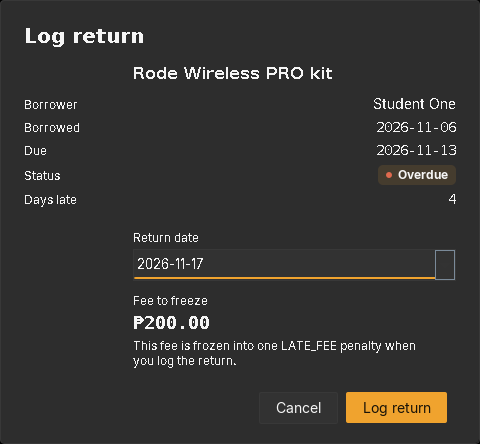

Dashboard · L-003 four days late, ₱200.00 accrued live
Return it and the fee freezes into exactly one LATE_FEE row; settling it on Penalties is one-way, and a waiver needs a written reason.

Return · the fee is previewed before it is frozen